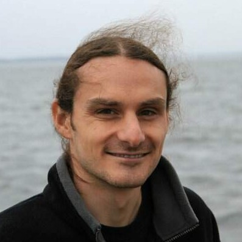
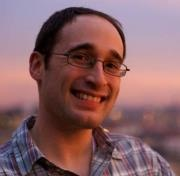
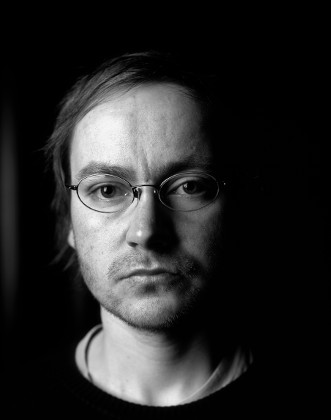

Walter Bright
 |
Walter Bright is the creator and first implementer of the D programming language and has implemented compilers for several other languages. He's an expert in all areas of compiler technology, including front ends, optimizers, code generation, interpreter engines and runtime libraries. Walter regularly writes articles about compilers and programming, is known for engaging and informative presentations, and provides training in compiler development techniques. Many are surprised to discover that Walter is also the creator of the wargame Empire, which is still popular today over 30 years after its debut. |
Andrei Alexandrescu
 |
Andrei Alexandrescu coined the colloquial term "modern C++" (adapted from his award-winning book Modern C++ Design), used today to describe a collection of important C++ styles and idioms. He is also the coauthor (with Herb Sutter) of C++ Coding Standards and the author of The D Programming Language book. With Walter Bright, Andrei co-designed many important features of D and authored a large part of D's standard library. His research on Machine Learning and Natural Language Processing completes a broad spectrum of expertise. Andrei holds a Ph.D. in Computer Science from the University of Washington and a B.Sc. in Electrical Engineering from University "Politehnica" Bucharest. He works as a Research Scientist for Facebook. |
Iain Buclaw
| Lead developer, project coordinator and the principal force behind the development of the GNU D Compiler from as far back as 2009, where have been responsible for the migration over from D1 to D2, as well as from GCC 3.x to GCC 4.x. Others might be interested to know that outside hobby life I work on for a Cloud Services/Hosting company as a Technical Engineer, and unofficially use D on a frequent basis to develop interpreters, and various plug-ins to work within our infrastructure. |
Ali Çehreli
| Ali Çehreli has been working as a C++ programmer in Silicon Valley since 1996. His experience has been with small and large companies in various fields, currently with Riverbed. He is the president of The Silicon Valley Chapter of the ACCU, where he has given presentations on C++ Exception Safety and the D programming language. He is the author of the online book "Programming in D", which aims at teaching D as a first language. |
Maxime Chevalier-Boisvert
 |
Maxime Chevalier-Boisvert holds a master's degree from McGill University and is currently pursuing a PhD at Université de Montréal as part of the Dynamic Language Team. Her area of study is compiler design and optimization, with a focus on dynamic programming languages, JIT compilers and type analysis. |
Don Clugston
 |
Don Clugston is a senior developer at Sociomantic Labs GmbH. Before becoming a full-time D programmer, he worked for 15 years in the solar photovoltaics industry, both in research and manufacturing. He also wrote the FastDelegate library which is used by many C++ programmers. He has been a prolific contributor to the D community since 2005. |
Andrew Edwards
 |
With over 19 years of service in the US Marine Corps, Andrew sets his sight on retirement in August 2014. His has a rich background is in Maintenance Management, currently holds an Associates Degree in Japanese Studies and is pursuing a Bachelors in Computer and Information Science from the University of Maryland University College. Plans after retirement include starting his company in software development and networking. |
Manu Evans
|  | Manu Evans is a senior technology programmer in the video games industry with 10 years commercial experience. He has worked at Remedy Games in Finland, and Krome Studios in Australia, on titles including Alan Wake, Star Wars, Spyro the Dragon, and many, many more. Manu is an expert in hardware abstraction, low level systems and performance optimisation on a wide variety of computer hardware. |
Ben Gertzfield
|  | Ben Gertzfield is a mobile engineer at Facebook. He's designed and shipped testability and dependency injection frameworks for Objective-C and C++, and is a huge advocate for freeing engineers from the burdens of manual testing. |
Leandro Lucarella
| Leandro Lucarella has been following D since about 2004 and started participating in D forums in late 2006. In 2008 he started working on the CDGC as his Software Engineering thesis, which he finished by the end of 2010. Since he got involved with D he has been a small but steady contributor. With more than 12 years of experience in the industry, in the last years he's been focusing on low-latency and distributed systems in C/C++ and moved to Berlin in late 2011 to work at sociomantic labs GmbH, a company using D as the main programming language. |
David Nadlinger
 |
Maintainer of LDC and avid open source advocate, with a weakness for outside-the-box metaprogramming ideas. Past D projects include language support in the SWIG C interface generator and the Thrift RPC framework (GSoC 2011). Semi-regular DMD/druntime/Phobos contributor and reviewer. |
Martin Nowak
|  | I started to learn C++ in 2009 when I worked as DSP and application developer at Ableton. Two years later I was lucky enough to delve into D. Contributing to dmd and druntime has accompanied my discovery of programming since then. I still look forward to finish my studies of electrical engineering and I'm an Emacser. |
Dmitry Olshansky
 |
I'm Dmitry Olshansky, a young all-around researcher. My interests are wildly changing over the time and include text processing, compilers, robotics, embedded systems, parallel and concurrent programming, scalable network systems and the current pursuit being AI. Among my works the most publicly recognized today is the standard regular expression library for D (a.k.a. std.regex). |
Vladimir Panteleev
 |
Vladimir Panteleev (a.k.a. "CyberShadow") is a D enthusiast from Moldova (Eastern Europe), best known within the D community for DFeed, the web newsreader (and IRC bot) running on http://forum.dlang.org. |
Stefan Rohe
 |
Stefan Rohe studied computer science in Germany and worked at Fraunhofer Institute. In 2008 he joined the industry where he got the chance to redesign a complete server application in D. Now there is a complete Scrum team of D professionals having about 80% of the code base emerged to D. |
Robert Schadek
 |
Robert Schadek received a Bachelor's degree in computer science in 2011 at the University of Oldenburg, Germany. In his bachelor thesis he developed a multi-threaded octree. In 2012 he earned a Master's degree in computer science at the University of Oldenburg. His master thesis was titled "DMCD A Distributed Multithreading Caching D Compiler" and introduced multi-threading among other optimizations to the compiler control flow. Since 2012, he is a PhD candidate in the department of Prof. Dr.-Ing. Oliver Theel at the University of Oldenburg. His PhD research focuses on quorum systems in combination with graphs. |
Rainer Schütze
 |
Rainer Schuetze is the author of Visual D, an extension to Visual Studio to integrate the D programming language. In addition he has been working on improving the experience of debugging D applications under Windows. In his professional career he has been working as a software engineer in the computer music industry for almost 20 years. |
David Simcha
| David Simcha is currently a software engineer at Google's New York City office, working on scalable nearest neighbor matching. Previous to this, he received his Ph.D. in Biomedical Engineering from Johns Hopkins University with a concentration in Bioinformatics while contributing extensively to D on the side. |
Adam Wilson
 |
Adam Wilson is the Director of Software Development at Prospective Software which specializes in CRM software for the automotive industry. He has over 14 years of experience writing code in a plethora of languages, including C++, C#, VB, and of course D. In his free time he enjoys spending time with his wife, reading science-fiction, and flying Cessna 172’s. |